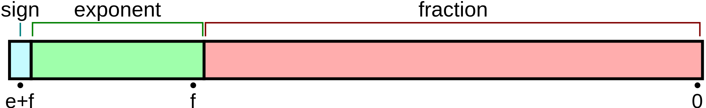

0.1 + 0.2 !== 0.3
在 JavaScript 中
1 | console.log(0.1 + 0.2 === 0.3) // => false |
直接运算 0.1 + 0.2 得到的结果是 0.30000000000000004，同样的，在 python 中也有
1 | print(0.1 + 0.2 == 0.3) # => False |
事实上，JavaScript 和 python 都是采用的 IEEE754 浮点数标准，而其他采用该标准的语言同样也有这个问题0.30000000000000004.com
浮点数的二进制表示
在计算机中，浮点数是采用二进制的科学计数法来进行存储的，包含符号位、阶码和尾数，最后形式为SEM
$(-1)^S$表示符号位，整数符号位为0，负数为1
$1.M$ 表示有效数字，IEEE754规定，在计算机内部，默认第一位总是1
$2^E$表示指数位，根据IEEE754标准，E为一个无符号整数，要根据实际值加 $2^{e-1}-1$，e 为指数位数
例如，二进制浮点数 1010.1011 转换成科学计数法为 ${(-1)^0}\times{1.0101011}\times{2^{130}}$
常用的浮点数有单精度浮点型和双精度浮点型，单精度浮点数占用32位，双精度浮点数占用64位
而位数部分有特殊规则，要求超出部分进1舍去0
| 浮点型 | 符号位 | 指数位 | 尾数位 | 占用内存 |
|---|---|---|---|---|
| 单精度浮点型 | 1 | 8 | 23 | 32 |
| 双精度浮点型 | 1 | 11 | 52 | 64 |

十进制浮点数转二进制采用整数部分除二取余，小数部分乘二取整，以17.375为例
整数部分
1 | 17 |
故整数部分转换成二进制后为 10001，对于小数部分
1 | 0.375 |
小数部分为 011，故最终二进制小数位 10001.011，转换后为${(-1)^0}\times{1.0001011}\times{2^{131}}$，转换成单精度浮点型为01000001100010110000000000000000
二进制下的 0.1 + 0.2
在 JavaScript 中，数值均为双精度浮点数，分别将 0.1 和 0.2 转换成二进制，此时会存在精度损失
1 | 0.1 => 0.0001100110011001...(无限循环) => 2^(-4) * 1.1(0011*12)010 |
浮点数加法首先对阶，即使阶码相等，此时又会有精度损失
1 | 0.1 2^-3 * 0.1100110011001100110011001100110011001100110011001101 |
转换为真值为 0.30000000000000004，因此0.1 + 0.2 !== 0.3
解决方案
整数和小数拆分后计算
1 | function add(a, b) { |